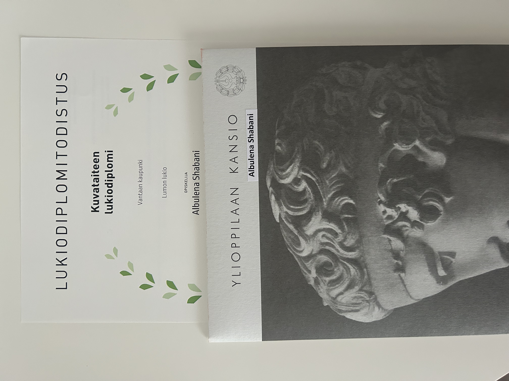

Koulutus
- Lumon lukio, Lukio (2019–2022)
- Mikkolan koulu, Peruskoulu (2019)
Todistukset
- Hygieniapassi – Myönnetty toukokuussa 2019
- Kansalaisen @-ajokortti – Suoritettu joulukuussa 2020
Sisältää seitsemän osa-aluetta: Laitteen ja tiedon hallinta, Internet ja sähköposti, Tekstinkäsittely, Esitysgrafiikka, Taulukkolaskenta, Kuvankäsittely, Verkkotyöskentely - Kuvataiteen lukiodiplomi – Suoritettu tammikuussa 2022
Diplomi koostuu akryylimaalauksesta ja portfoliosta

Työkokemus
-
Myyjä, Mango (2022 – Nykyhetki)
- Tarjoan asiakaspalvelua ja autan asiakkaita löytämään sopivat tuotteet.
- Huolehdin myymälän esillepanosta ja varastonhallinnasta.
- Kehitän aktiivisesti myymälän myyntiä ja asiakaskokemusta. -
Avustaja, Sotungin koulu (2018)
- Työskentelin opettajan avustajana valmistavassa luokassa.
- Avustin oppilaita oppimisessa ja päivittäisissä luokkahuoneen tehtävissä.
- Kesto: kaksi viikkoa TET-harjoittelun aikana.
Osaaminen
- Asiakaspalvelu ja myynti
- Tiimityö ja yhteistyötaidot
- Projektinhallinta ja organisointi
- Luova ajattelu ja ongelmanratkaisu
- Teknologia- ja tietokonetaito
Harrastukset
Vapaa-ajallani nautin lukemisesta, matkustamisesta ja luovista projekteista, kuten maalaamisesta ja käsitöistä. Harrastukset auttavat minua kehittämään luovaa ajattelua ja tuomaan inspiraatiota myös työelämään.
Ota yhteyttä
Jos haluat keskustella työmahdollisuuksista tai projekteista, voit ottaa minuun yhteyttä tästä.